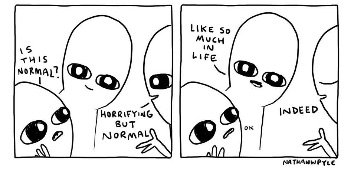

"The separate something looks for wholeness."
--Tony Parsons
----------
"We suffer from a hallucination, a distorted sensation of our own existence as living organisms. Most of us have the sensation that “I myself” is a separate center of feeling and action, living inside and bounded by the physical body.
Because it is a hoax from the beginning, the personal ego can make only a phony response to life. For the world is an ever-elusive and ever-disappointing mirage only from the standpoint of someone standing aside from it. "
--Alan Watts
Over the years, there’ve been a handful of statements which so many people have said to me in sessions that I've come to wish I had $1 for every time they were said.
In this way I could now be writing The Mind-Tickler from my yacht.
But no, I’m still waiting for dollars to rain from the sky whenever people open their mouths.
The Tickler has covered a few of these Everybody-Says-‘Ems before.
Today is, “Am I normal?” day.
“Is this feeling or thought normal? Am I irretrievably f’d up? Is there something wrong with me? Other people don’t think this, right? You must agree that I am especially a problem, it’s worse for me than for anyone else. I am the only one, or at least I’m worse than everyone else. I am NOT normal.”
Some version of this script might sound familiar.
That would be because, despite what thought says,
you’re just like the rest of us.
Which is, y’know, another way of saying “normal.”
Which may or may not be believed.
So what does it mean, anyway? What makes something not normal?
Let’s ask Mr. Dictionary.
Normal: conforming to a type, standard, or regular pattern: characterized by that which is considered usual, typical, or routine.
Hmmm, apparently it’s about numbers, comparing to a “type.”
Normal requires others. Lots of them. All acting and feeling as one unit, one pattern, one routine. A typical, usual, same unit.
All those others somehow having escaped the quirky weirdnesses of being human.
Unlike you- the loner weirdo- living outside the majority.
A distinct individual. A person.
By definition not included in a larger, better, happier, healthier, whole.
Could it be that the longing for normality is actually a longing to be inside this inclusive, all-encompassing, one-ness?
To be part-of, one with, the much-bigger-than-you?
There you are, yearning to get back to the garden, where everything is perfect, where you’re not missing out on the vast, spacious otherness which envelops everyone else?
(Is this not what enlightenment seekers are after as well?)
At the same time, in direct contradiction to the desire to feel normal feelings and think normal thoughts and be a normal person,
you also enjoy being “different” and standing out in some way. You work hard in various ways to make that happen, and maybe even take offense at all this talk about being normal.
As in, “Not me! I don’t care about normal!”
Which makes sense too. After all, everyone has a lifetime of creating and defending this not-blended-in person.
No one is going to be in a hurry to throw out all that hard work and say, “Ok, there’s no me, I’m just a not-special, not-distinctive part of a whole.”
No, the self lives on.
Even if it hurts.
Even if it comes with a constant sense of not good enough, and something wrong, and incompleteness, aloneness, insufficiency.
Because of course any one separate person has to be limited, and never able to be as vast as the unlimited whole.
Of course it's insufficient and not enough.
Oh well, at least you know who you are as a person.
So ok, is there any way to change this, fix this, eliminate the contradictory desires to be a special and distinct individual, and also be a normal blended-in-‘er like all the others?
Both?
As in, is there any way to attain a sense of completeness for the individual, from outside the individual?
Well, that would mean there are two things.
That would be a funny kind of completeness.
I mean, if it doesn’t include you, how complete and whole can it be?
So instead of asking a trick and unanswerable question, what if it was possible to set aside thinking about the body as you for a moment.
Not because there’s anything wrong with identifying as a body, just as a way to try something different.
What if it was possible to consider whatever it is that animates the body and brain, whatever it is that feels like the essence of you, whatever it is that is not the body, and
see if it’s limited, contained, incomplete.
See if it has a beginning, an end, a place where it isn’t.
See if there are any selves outside it. See if it leaves any person out.
See if there are any persons at all.
See what happens to the question, “Am I normal?” after these questions.
It could be that the self is indeed incomplete, and that it doesn’t matter one bit.
Because it’s not what you are.
It could be that, despite thought saying otherwise,
not-normal you has always been included and part of the greater whole
anyway.
Perhaps it’s not possible to be “not normal.”
Because perhaps you’re everything, without limit or end.
Which might be as normal as it gets.
And which might make life far richer
than having a yacht.
Click here to subscribe and get your Mind-Tickled every week.
Watch Judy on Buddha at the Gas Pump
"I am someone I would have never imagined. A secret. A dream. Burn me. Drown me. Tell me lies. I will still be who I am.”
--Alice Hoffman
----------
"I never told you there was anything wrong with you. If I made you, I filled you with passions, limitations, pleasures, feelings, needs, inconsistencies. How can I punish you for being the way you are, if I'm the one who made you? What kind of god would do that?
My beloved, this life is not a test, not a step on the way, not a rehearsal, nor a prelude to paradise. This life is the only thing here and now and it is all you need."
--Baruch de Spinoza, speaking for God
